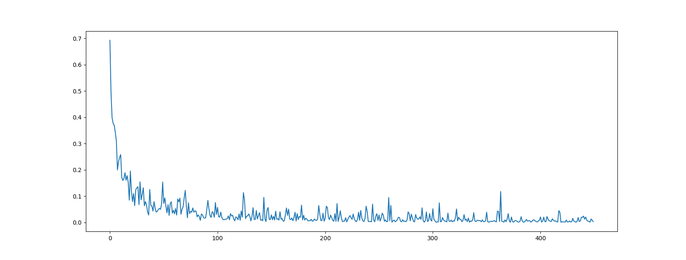

Optimizer choice
This implementation uses Adam instead of SGD with momentum.
Siamese · Omniglot · PyTorch
PyTorch reimplementation on the Omniglot dataset
One-shot learning system
A compact Siamese PyTorch implementation trained on Omniglot, with a clear path from paper to runnable code.
Run the project
Prepare Omniglot, create the model directory, and launch training with the provided script.
git clone https://github.com/brendenlake/omniglot.git
cd omniglot/python
unzip images_evaluation.zip
unzip images_background.zip
cd ../..
mkdir models
python3 train.py --train_path omniglot/python/images_background \
--test_path omniglot/python/images_evaluation \
--gpu_ids 0 \
--model_path modelsImplementation notes
This implementation uses Adam instead of SGD with momentum.
The code keeps default PyTorch initialization and shared settings instead of layer-specific tuning from the paper.
Experiment artifact
The repository includes a sampled loss curve collected during training.
